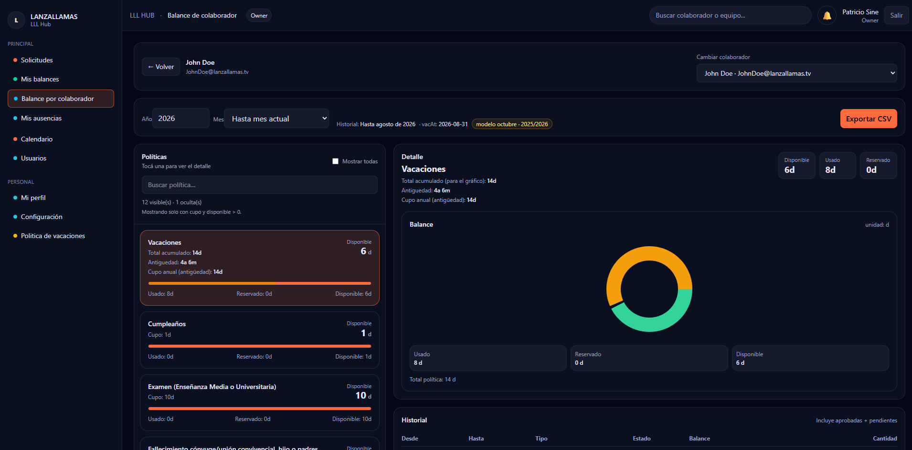
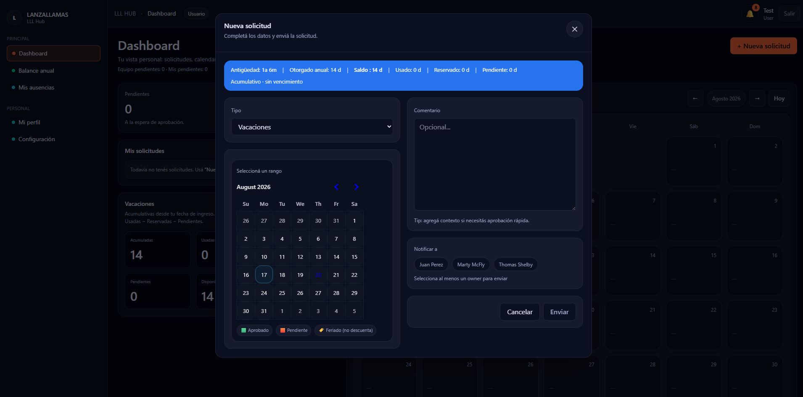
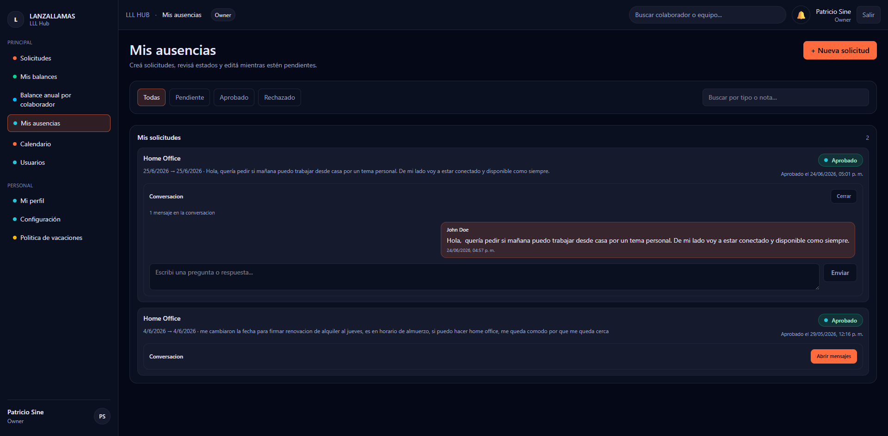
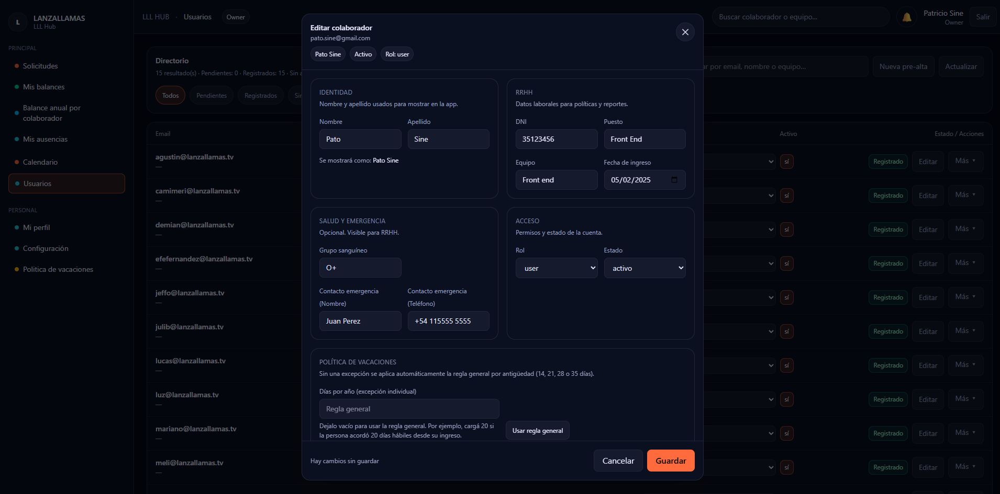

Centralize requests
Give employees one place to request vacations, home office and other absences, add context and follow each status.


Overview
Lanzallamas needed a clearer way to coordinate vacations, home office and other absences without relying on messages, spreadsheets and scattered records.
LLL Hub brings requests, balances, calendars and people data into one shared workspace, with focused views for employees and owners.
The brief
Give employees one place to request vacations, home office and other absences, add context and follow each status.
Translate policy rules and accrued, used, reserved and available days into information people can understand at a glance.
Connect employee self-service with the owner tools needed to review requests, manage people, policies and reporting.
Screen by screen




Product principles
Pending, approved and rejected requests remain recognizable across dashboards, lists and conversations.
Dates, balances, comments, reviewers and policy details stay close to the decision they support.
A shared interface adapts to employee and owner responsibilities without fragmenting the product.
Need an internal tool that works this clearly?